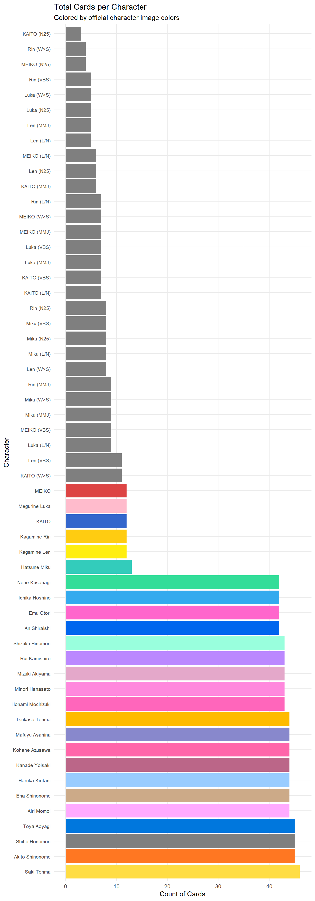

Project Sekai Data Cleaning and Prelim Graphing
Kryschelle Fakir
2026-05-05
For this project, I got some data from the Wiki from one of my favorite mobile games. I tried webscraping but that simply did not work.
Some necessary background: Project sekai is a rhythm game that features a gacha based card system where you use in-game currency (which can be bought with real money) to ‘roll’ for cards. Often, you’ll ‘roll’ on a specific banner. Some of these cards are limited, some are tied to a story event, it all depends. There’s a lot that goes into the actual rhythm game system as these cards can be used to buff your performance during the rhythm game. It’s truly neat.
The story of the game is that you, the player, are ‘watching’ over mini worlds (sekai means world in Japanese) with have characters undergoing certain challenges in their lives together. The Virtual Singers (the original vocaloids) serve as guides for these characters as they navigate real world challenges. It’s a blast to play and I would recommend it for anyone who loves rhythm games.
For this piece, my goal is to clean the data to make it usable for my final portfolio piece. I would also like to run some preliminary graphs to calculate how many cards exist for each character and group. I want to see if there are discrepancies and if some characters are more highly favored than others.
- Name: Name of the card
- Unit/Group: Name of the group
- Vivid Bad Squad

- Azusawa Kohane

- Shiraishi An

- Shinonome Akito
- Aoyagi Toya

- Azusawa Kohane
- Nightcord at 25:00

- Yoisaki Kanade

- Asahina Mafuyu

- Shinonome Ena

- Akiyama Mizuki

- Yoisaki Kanade
- More More Jump!

- Hanasato Minori

- Kiritani Haruka

- Momoi Airi

- Hinomori Shizuku

- Hanasato Minori
- Leo Need

- Hoshino Ichika

- Tenma Saki
- Mochizuki Honami

+Hinomori Shiho
- Hoshino Ichika
- Wonderlands x Showtime

- Tenma Tsukasa

- Otori Emu

- Kusanagi Nene

- Kamishiro Rui

- Tenma Tsukasa
- Virtual Singer
- Hatsune Miku

- Kagamine Rin

- Kagamine Len

- Megurine Luka

- MEIKO

- KAITO

- Hatsune Miku
- Vivid Bad Squad
- Character: Name of the character
- Character names are listed above under their respective groups.
- Type: The attribute assigned to each card.
- Mysterious
- Cool
- Pure
- Happy
- Cute
- Rarity: The level of rarity for each card. On a scale of 1 to 4. Birthday rarity is similar to 4 star rarity but is exclusive to characters birthdays
- Availability: Determines when you get the card and how long it
sticks around
- Limited: Only present for a short amount of time. Will appear one more time and then is gone forever. Leads to much heartbreak.
- Permanent: You could get this card at any time and it will never go away. Usually the cards related to a permanent event.
- BD/AN Limited: Similar to Limited but exclusive for birthdays and anniversaries (virtual singers only have anniversaries, not birthdays)
- Skill Type: Determines what buffs it gives during gameplay.
- Scorers
- Lockers
- Healers
- Hybrid
- High-Tier Competitive Skills
- Released: When the card first came out
- Event: The event related to the card. N/A for limited cards
- Costume: Some cards get special costumes to go along with them. This will coded as present or not.
Data Cleaning
To begin, I loaded in the data and the packages. Then, I changed the symbols for the rarity variable into numbers. Then I made a new variable that accounts for whether the card had a costume and was associated with an event or not. This will make charting my graphs much easier. While graphing I ran into an issue with the ‘group’ variable and changed it to unit to make R less angry.
library(tidyverse)## Warning: package 'ggplot2' was built under R version 4.5.3## ── Attaching core tidyverse packages ──────────────────────── tidyverse 2.0.0 ──
## ✔ dplyr 1.1.4 ✔ readr 2.1.6
## ✔ forcats 1.0.1 ✔ stringr 1.6.0
## ✔ ggplot2 4.0.3 ✔ tibble 3.3.1
## ✔ lubridate 1.9.4 ✔ tidyr 1.3.2
## ✔ purrr 1.2.1
## ── Conflicts ────────────────────────────────────────── tidyverse_conflicts() ──
## ✖ dplyr::filter() masks stats::filter()
## ✖ dplyr::lag() masks stats::lag()
## ℹ Use the conflicted package (<http://conflicted.r-lib.org/>) to force all conflicts to become errorslibrary(readxl)
pjsk_csv <- read_excel("pjsk.csv.xlsx")
library(tidyverse)
df_cleaned <- pjsk_csv %>%
mutate(
rarity_numeric = case_when(
str_detect(Rarity, "🎀") ~ 4,
TRUE ~ as.numeric(str_count(Rarity, "⭐"))
),
has_costume = case_when(
is.na(Costume) | Costume == "" | Costume == "None" | Costume == "-" ~ "Not Present",
TRUE ~ "Present"
),
is_event_card = case_when(
is.na(Event) | Event == "" | Event == "None" | Event == "-" ~ "No",
TRUE ~ "Yes"
)
)
colnames(df_cleaned) <- tolower(trimws(colnames(df_cleaned)))
print(colnames(df_cleaned))## [1] "name" "group" "character" "type"
## [5] "rarity" "availability" "skill type" "date"
## [9] "event" "costume" "rarity_numeric" "has_costume"
## [13] "is_event_card"df_cleaned <- df_cleaned %>%
rename(unit = "group")Character and Group Colors
In the game, each group and character have their own specific color. I thought it would be neat to factor this into the graphing below.
pjsk_colors <- c(
"Leo/need" = "#4455dd", # Deep Blue
"MORE MORE JUMP!" = "#88dd22", # Bright Green
"Vivid BAD SQUAD" = "#ee1166", # Vivid Pink/Red
"Wonderlands×Showtime" = "#ff9900", # Orange
"Nightcord at 25:00" = "#884499", # Dark Purple
"Virtual Singer" = "#33ccbb" # Teal/Miku Blue
)
char_colors <- c(
# Leo/need
"Ichika Hoshino" = "#33aaee", "Saki Tenma" = "#ffdd44",
"Honami Mochizuki" = "#ff66bb", "Shiho Honomori" = "#bbdd22",
# MORE MORE JUMP!
"Minori Hanasato" = "#ffccaa", "Haruka Kiritani" = "#99ccff",
"Airi Momoi" = "#ffaaff", "Shizuku Hinomori" = "#99ffdd",
# Vivid BAD SQUAD
"Kohane Azusawa" = "#ff66aa", "An Shiraishi" = "#0066ee",
"Akito Shinonome" = "#ff7722", "Toya Aoyagi" = "#0077dd",
# Wonderlands×Showtime
"Tsukasa Tenma" = "#ffbb00", "Emu Otori" = "#ff66cc",
"Nene Kusanagi" = "#33dd99", "Rui Kamishiro" = "#bb88ff",
# 25-ji, Nightcord de.
"Kanade Yoisaki" = "#bb6688", "Mafuyu Asahina" = "#8888cc",
"Ena Shinonome" = "#ccaa88", "Mizuki Akiyama" = "#e4a8ca",
"Hatsune Miku" = "#33ccbb", "Kagamine Rin" = "#ffcc11",
"Kagamine Len" = "#ffee11", "Megurine Luka" = "#ffbbcc",
"MEIKO" = "#dd4444", "KAITO" = "#3366cc"
)
df_cleaned <- df_cleaned %>%
mutate(character_name = str_remove(character, "\\s\\(.*\\)"))Next, I wanted to see how many cards existed for each group and character. As such, I generated a bar graph and factored that by groups and a bar graph that shows the amount of cards per character.
ggplot(df_cleaned, aes(y = fct_infreq(unit), fill = unit)) +
geom_bar() +
scale_fill_manual(values = pjsk_colors) +
labs(
title = "Number of Cards per Group",
x = "Count",
y = "Group Name"
) +
theme_minimal() +
theme(legend.position = "none")
ggplot(df_cleaned, aes(y = fct_infreq(character), fill = character)) +
geom_bar() +
scale_fill_manual(values = char_colors) +
labs(
title = "Total Cards per Character",
subtitle = "Colored by official character image colors",
x = "Count of Cards",
y = "Character"
) +
theme_minimal() +
theme(
legend.position = "none",
axis.text.y = element_text(size = 8)
)
From these visualizations, it’s clear that Saki Tenma gets the most cards and Kaito from Nightcord at 25:00 receives the least.